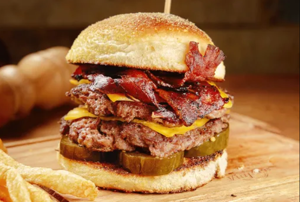

Say No More
Cheddar, panceta, pepino y bbq

- 1 - Pan de hamburguesa
- 1 - Medallon de carne
- 1 - Feta de cheddar
- 1cda - Salsa Shark
Procedimiento
- 1 Dorar el pan cortado al medio al fuego bajo
- 2 Cocinar el medallon al fuego alto, agregar sal
- 3 Dar vuelta el medallon y agregar la feta de cheddar
- 4 Servir con la salsa en el pan superior
Go Back